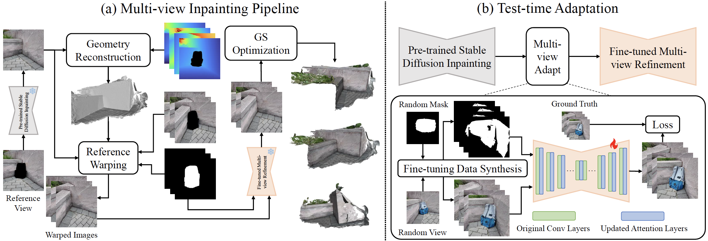
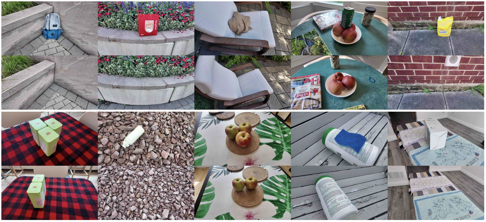

IMFine: 3D Inpainting via Geometry-guided Multi-view Refinement
Abstract
Current 3D inpainting and object removal methods are largely limited to front-facing scenes, facing substantial challenges when applied to diverse, “unconstrained" scenes where the camera orientation and trajectory are unrestricted. To bridge this gap, we introduce a novel approach that produces inpainted 3D scenes with consistent visual quality and coherent underlying geometry across both front-facing and unconstrained scenes. Specifically, we propose a robust 3D inpainting pipeline that incorporates geometric priors and a multi-view refinement network trained via test-time adaptation, building on a pre-trained image inpainting model. Additionally, we develop a novel inpainting mask detection technique to derive targeted inpainting masks from object masks, boosting the performance in handling unconstrained scenes. To validate the efficacy of our approach, we create a challenging and diverse benchmark that spans a wide range of scenes. Comprehensive experiments demonstrate that our proposed method substantially outperforms existing state-of-the-art approaches.
Pipeline
Overview of our proposed approach. (a) shows the proposed 3D inpainting pipeline. Specifically, a reference view is first inpainted, which will be used to reconstruct complete geometry, along with rendered multi-view depth maps. The inpainted reference image is then warped to other views, which are taken as input conditions for the multi-view refinement network to generate a set of view-consistent images. Afterward, we fine-tune the 3D scene to get the inpainted scene. (b) illustrates the detailed structure and training of the multi-view refinement network. Basically, we take the pre-trained image inpainting model, incorporate additional space-time attention layers, and exploit the test-time adaptation to fine-tune it into a multi-view refinement model. To generate a fine-tuning dataset, we synthesize warped images under the original captured scene, which has the ground-truth captured images. In detail, reference views are selected randomly, and we set random masks over the images, apply geometry jittering, and warp the reference images in other views.
Inpainting mask detection. (a) shows the object mask (orange) along with the dilated mask (pink), which includes additional neighboring pixels; Each dilated mask consists of two parts: the actual inpainting mask and out-of-interest areas, marked as regions ① and ② in (b). These regions are mapped in 3D to the NBS and background areas, respectively, as shown in regions ① and ② in (c). During multi-view mapping optimization, the central NBS region is progressively refined, while background areas are suppressed by each other; (d) shows the rendered neighbor mask after GS scene optimization.
Depth Rendering
| Input 3D scene | Object pruned scene | 3D inpainted scene |
|---|
Visual Comparison
| Input 3D scene | GaussianEditor | GScream |
|---|
| SPInNeRF | MVIPNeRF | Ours |
|---|
Dataset
Preview of our collected dataset. The training images are displayed at the top, and the testing images are at the bottom.
BibTeX
@inproceedings{imfine,
title={IMFine: 3D Inpainting via Geometry-guided Multi-view Refinement},
author={Zhihao Shi and Dong Huo and Yuhongze Zhou and Kejia Yin and Min Yan and Juwei Lu and Xinxin Zuo},
year={2025},
booktitle={CVPR},
}